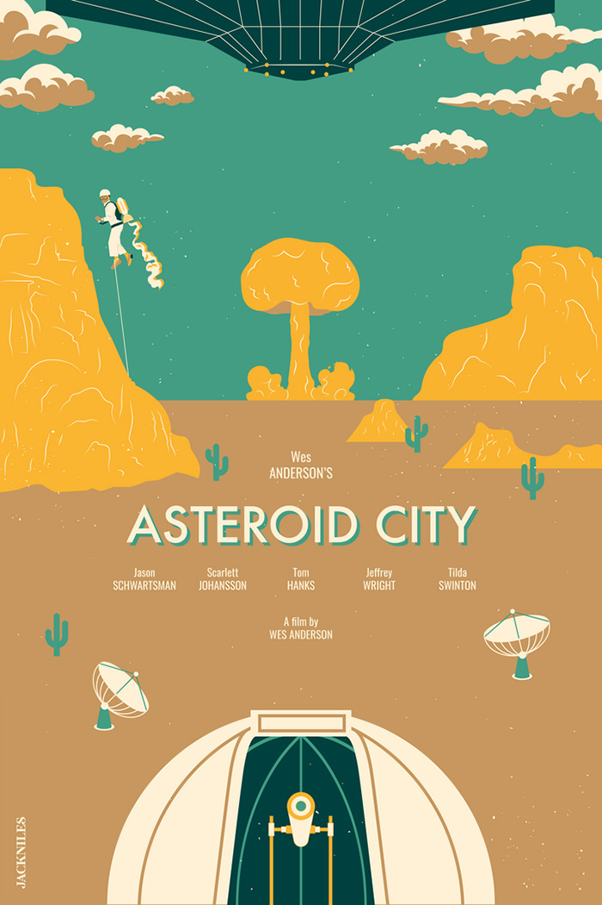
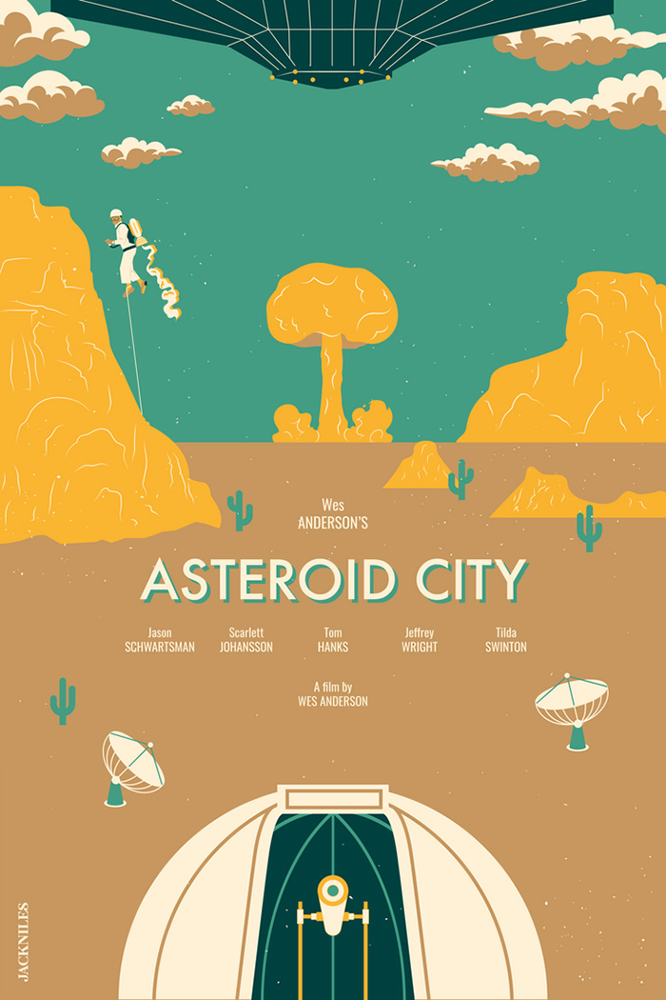

Wes Anderson is an American filmmaker known for his distinctive visual style and quirky comedies. His movies often feature eccentric characters, symmetrical compositions, and a unique color palette.
Anderson is known for his collaboration with actor and screenwriter Owen Wilson, with whom he has written several films.
 
